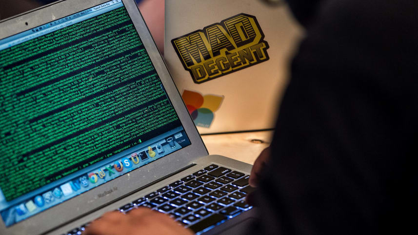

Israel abre su codigo
El gobierno Israeli abrira su codigo para todo el publico en busqueda de mejoras. Estado Unidos, Gran Bretaña y Francia ya lo han hecho.
Leer más
El software libre es un software que le brinda al usuario la libertad de compartirlo, estudiarlo y modificarlo. Llamamos a este software gratuito porque el usuario es libre.
Usar el software libre es tomar una decisión política y ética al afirmar el derecho a aprender y compartir lo que aprendemos con los demás. El software libre se ha convertido en la base de una sociedad de aprendizaje en la que compartimos nuestro conocimiento de una manera que otros pueden aprovechar y aprovechar.
Actualmente, muchas personas usan software propietario que niega a los usuarios estas libertades y beneficios. Si hacemos una copia y se la damos a un amigo, si tratamos de averiguar cómo funciona el programa, si ponemos una copia en más de una de nuestras computadoras en nuestra propia casa, podríamos ser atrapados y multados o puestos en cárcel. Eso es lo que está en la letra pequeña del acuerdo de licencia que acepta cuando usa software propietario.
Las corporaciones detrás del software propietario a menudo espiarán tus actividades y te restringirán de compartir con otros. Y debido a que nuestras computadoras controlan gran parte de nuestra información personal y actividades diarias, el software propietario representa un peligro inaceptable para una sociedad libre.
Richard Stallman explains free software at TEDx Geneva. Subtitles and slides.
Algunas de las ultimas y mas relevantes sobre el software libre y open source
El gobierno Israeli abrira su codigo para todo el publico en busqueda de mejoras. Estado Unidos, Gran Bretaña y Francia ya lo han hecho.
Leer másEntrevista a uno de los fundadores del Software Libre: el uso de los datos de los usuarios, el control de las empresas sobre la politica y mas.
Leer másUn Top 10 de los mejores programas gratis para windows 10 del 2018.
Leer más